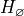
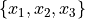
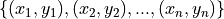
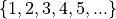
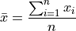
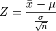

Introduction#
Statistics is the study of making general assertions from particular cases.
Motivation#
What is science? A rough definition of science might go: “Science is a rational process used for deciding which propositions are true and which propositions are false.”
What this definition doesn’t say is what the “decision process” for sorting propositions into true or false looks like. That is where statistics comes in. Statistics is the study of this decision process; it is a way of understanding what we mean when we say something is true or something is false. Statistics is the study of how we do science, and since it is the study of science, it is also the study of decision-making.
Our lives are filled with decisions. Life is, in some sense, nothing but a series of decisions. So, because we do it so often, we have a pretty good of idea of what we mean by “deciding” or “making a decision”. Every decision we make, we take into account the uncertainty in the various outcomes that might result, factor in their respective likelihood and then decide what course of action is the best. We know there is always a chance of the unexpected occuring anytime we take an action in the world and that our decisions are not always correct.
Writers and philosophers have, throughout the ages, summarized this idea much more eloquently than the current author, so let’s hear what they have to say on the matter,
Boethius, On the Consolation of Philosophy, 524 AD
With domineering hand she moves the turning wheel,
Like currents in a treacherous bay swept to and fro:
Her ruthless will has just deposed once fearful kings
While trustless still, from low she lifts a conquered head;
No cries of misery she hears, no tears she heeds,
But steely hearted laughs at groans her deeds have wrung.
Such is a game she plays, and so she tests her strength;
Of mighty power she makes parade when one short hour
Sees happiness from utter desolation grow.
William Shakespeare, Hamlet, 1599
Our wills and fates do so contrary run
That our devices still are overthrown;
Our thoughts are ours, their ends none of our own.
Robert Burns, To a Mouse, on Turning Her Up in Her Nest With the Plough, 1785
But Mouse, you are not alone,
In proving foresight may be vain:
The best-laid schemes of mice and men
Go oft awry,
And leave us nothing but grief and pain,
For promised joy!
Han Solo, 1980
Never tell me the odds!
That’s all very enlightening, but it amounts to saying: there is always uncertainty in any assertion we make about the world around us. Our “devices might be overthrown” or “go oft awry”.
In statistics, we are interested in how to quantity this uncertainty. Once we have quantified and measured it, rather than waxing poetical about its effervescence, we want to use that information to allow us to make the most informed decision we can possibly make.
Before we can make these notions precise, we need to define some terms. On this page, we will define the general notions of statistics and give a brief overview of its ideas and concepts.
Definitions#
Individual#
- Definition
A single observation.
Individuals will mean different things depending on the experiment being conducted.
If we are measuring how hot it is over the course of a week in the summer, then the individuals in the experiment will be the temperature measurements made on a thermometer. The units of each individual observation will be degrees Kelvin (or degrees celsius or degrees fahrenheit, depending on the scale of the unit).
Note
Degress Kelvin is the standard unit for temperature the fields of physics, chemistry and biology.
If we are measuring what percent of the country’s population supports a certain government policy, then the individuals in the experiment will be the people sampled. The unit of each individual observation would be the binary units, Y or N, that represent the possible outcomes of answers, “Yes” or “No”
Population#
- Definition
The population is the set of all possible individuals that can be observed in a given experiment.
Sample#
- Definition
A sample is a subset of individuals drawn from the population in a given experiment.
Population vs. Sample#
The relationship between the population and the sample can be visualized with the following venn diagram.

The sample is contained in the population; it is the portion of the population we actually observe. The sample is the information we have available to us to draw conclusions about the population.
Note
We will study venn diagrams in more detail in later chapters.
Methods of Observation#
In statistics, “observation” is the name of the game. Without first making observations, there is nothing else to be done. There are several different ways and techniques of making observations.
- Conducting Census
A census is a type of statistical study where each individual in the population is observed.
In practice, we are never able to see entire population at once. A census is an ideal, like a vacuum or a frictionless surface. If we had infinite time and resources, we should always like to conduct a census, rather than drawing a sample, because it would tell us conclusively how the population looked.
A census is conducted every ten years in the United States to accurately measure the population size. Even a massive and organized operation like this is likely to miss more than a few individuals in the population, whether due to undocumented citizens, errors in record-keeping or pure happenstance. The point being, a census is the ideal study, but impossible to obtain.
Warning
A census may also refer to the entire population itself, rather than the method of observing the population. The use should always be clear from context.
- Drawing A Sample
A sample is a type of statistical study where a subset of the population is observed at random.
When a sample is drawn from a population, we say, “the population has been sampled” or that we are “sampling the population”.
Because we are not able to conduct a census whenever we want, we have to make do with a sample. It is usually the case the sample is much, much smaller than the actual population. For this reason, it is very important the sample is random and representative of the population.
We need a random sample because we do not want the data to have any features in it (e.g., patterns) that would obscure the population we are trying to observe.
At the same time, we need a representative sample because we do not want the data to give a false impression of the population we are trying to observe.
Often, these two goals are at odds with one another. In order to make a sample representative, you must impose some sort of order on the way you sample the population, but doing so then affects the randomness of the sample. Finding the right balance between these two directives is the topic of the next section.
Sampling Techniques#
Random#
- Definition
A random sample is selected from a population without any pre-determined method.
Examples
Mixing names in a hat and picking three names without looking.
Going through the phone book and flipping a coin to determine who to include in the sample and who to exclude.
Assign every name a number and then draw random numbers.
The last item in the list above is the most common technique in practice. A standard method in statistics for generating a random sample from a population is to associate an index to each individual. Consider the following table of names,
Index |
Individual |
1 |
Jean-Paul Sartre |
2 |
Martin Heidegger |
3 |
Edmund Husserl |
4 |
Bertrand Russell |
5 |
Kurt Godel |
6 |
Gottlob Frege |
7 |
Immanuel Kant |
8 |
Rene Descarates |
9 |
Ludwig Wittgenstein |
10 |
Alain Badiou |
Once each individual in the population is associated with an index, random numbers are generated; the indices that are selected by the random number generator then tell us what individuals to select for the sample. For example, the random number generator might output 3, 6, and 10; from this, we would then construct a sample of individuals: Edmund Husserl, Gottlob Frege, Alain Badiou.
Systematic#
- Definition
A systematic sample is selected from a population according to some fixed rule.
- Examples
Asking every 10 th person who enters a building if they are voting in the next election.
Selecting ten people from every zipcode.
Sending out surveys and using every 5 th one that is returned.
Stratified#
- Definition
To get stratified samples, the population is broken up into mutually exclusive groups. Then a random sample from every group is taken.
- Example
Sampling a highschool by grouping the school into freshmen, sophomores, juniors and seniors.
Separating the population by political affiliation and then drawing a sample from each group.
Mailing surveys to 100 randomly selected residents of each state.
The different groups of a stratified sample as sometimes known as strata.
Stratified samples are easily visualized with a table. As an example, suppose in the first example, we were sampling a population of highschool students to determine for whom they were voting in the student government elections.
Candidate 1 |
Candidate 2 |
Other |
|
Freshmen |
25 |
45 |
2 |
Sophomores |
30 |
33 |
5 |
Juniors |
15 |
27 |
1 |
Seniors |
23 |
21 |
2 |
These tables will pop up in a later chapter under the name Probability Tables.
Cluster#
- Defintion
To get a clustered sample, the population is broken up into random groups and then each group is randomly sampled.
- Example
Looking at a map of a city and breaking it into grid of squares. Then, selecting a few squares and drawing a sample from each square.
Surveying people entering supermarkets across a city.
Looking at the employees of the top three local banks by revenue to determine the average salary of a bank employee.
It is easy to confuse the method of cluster sampling with the method of stratified sampling. They seem to be saying the exact same thing at first glance, but upon closer inspection, there are subtle, but important differences.
Difference #1: The groups are sampled differently.
In a clustered sample, certain clusters are selected and sampled; the rest of the clusters are ignored.
In a stratified sample, all of the strata are selected and sampled.
Difference #2: The composition of the groups is different.
In a clustered sample, each cluster is hetergeneous; Each group contains representatives of all subsets of the population.
In a stratified sample, each strata is homogeneous; Each group contains representatives of a certain subset of the population.
Other Terminology#
- With Replacement
An observation has been made with replacement, if after its selection, it is placed back into the population.
Example
Consider drawing a single card from a deck of cards, shuffling it back into the deck and then selecting another card. The event of getting the same card on both draws is a possible event because the card selected on the first draw is returned to the population of possible observation before making the second draw.
- Without Replacement
An observation has been made without replacement, if after its selection, it is removed from the population and is no longer a possible observation.
Example
Consider drawing a single card from a deck of cards, setting it aside and then selecting another card. The event of getting the same card on both draws is an impossible event because the card selected on the first draw is no longer in the population of possible observation, and therefore cannot possible be selected again. In other words, when we sample data without replacement, we affect the sample space of subsequent experiments.
Statistical Inference#
Once we have data to analyze, we apply the statistical inference to see what it tells us.
Statistical inference is the process of using a sample of data to reach new conclusions about the population from which it was drawn.
Null and Alternate Hypotheses#
Usually in statistics we are concerned with hypotheses and whether or not, based on the available data, there is sufficient evidence to reject one hypothesis in favor of another.
For example, we might like to know whether a new type of fuel is cleaner and more efficient than standard gasoline. In this case, we would start by assuming the null hypothesis that the efficiency of the new fuel is the same as standard gasoline. We would then establish an experiment designed to test this hypothesis against the alternate hypothesis that the new fuel is more efficient than standard gasoline.
Null Hypothesis

The null hypothesis is the prior assumption we bring to the experiment. It represents the “status quo”.
The term “null” in null hypothesis means “none” or “empty”, as in nothing has been accomplished with the null hypothesis. It represents “no change to the state of our knowledge about the world”
Alternate Hypothesis

The alternate hypothesis is the theory we would like to test with the experiment. It represents the “overturning of the status quo” in favor of a new explanation.
We assume the null hypothesis in order to test the validity of the alternate hypothesis. If we find sufficient evidence the null hypothesis is not true, we reject it in favor of the alternate hypothesis.
Important
We never prove the null hypothesis true. It is always assumed true in order to determine whether there is sufficient evidence to conclude it is false.
Controls#
In the example of testing the efficiency of a new type of fuel against standard gasoline, notice we are asking a question about two different populations: the population of cars that use the new type of fuel and the population of cars that use standard gasoline. Specifically, we are asking if there is a statistically significance difference between the efficiency of either group.

The first group is referred to as the test group, the sample to which a treatment has been applied and whose efficacy we would like to test.
The second group is referred to as the control group, the sample to which no treatments have been applied and which acts as a baseline against which we can judge the effects of the treatment.
Confounding Variables#
Let us continue to consider the example experiment of testing the efficiency of a new type of fuel against standard gasoline.
To truly isolate the experiment from any confounding variables, we should restrict our populations to certain makes and models of cars. Otherwise, we would not be sure if the results of our experiments were due to the efficiency of the new fuel, or variations in the engine running the fuel.
A confounding variable is a variable that affects the experiment, but is not measured, whether due to poor experimental design or due to the nature of the interaction.
To see what is meant by “due to the nature of the interaction”, suppose the new type of fuel whose efficiency is being tested loses some of its potency at higher elevations (due to the effects of gravity on its chemical composition, let’s say). If some of the data we collect from the cars using the new fuel type is collected from high-altitude locations, then the data will show the effects of this dependence, without our being aware. We might then erroneously conclude the new fuel does not possess the anticipated efficiency gains, call the experiment a wash and go home sad.
For this reason, we must be very careful to always consider what variables for which we haven’t accounted might be influencing the samples we observe. In other words, we must always be mindful of confounding variables and their effects.
Statistical Fallacies#
Bias#
Bias is a type of systematic error that arises when the sample data that is used to draw conclusions about the population does not accurately reflect the population.
Selection Bias#
- Definition
Selection bias occurs when the sampling method is not representative of the entire population.
As an extreme example to illustrate the meaning of this type of bias, if you were interested in making assertions about the average height of a United States citizens, selecting a sample of 100 elementary schoolers would lead you to make wildly erroneous conclusions.
A famous example of how to avoid selection bias is the work of Abraham Wald during World War II. Wald was a statistican at Columbia University who was analyzing damage done to aircraft that had taken enemy fire. Had he only used the sample as his disposal, the aircraft that survived the war and made their way to Columbia University to be examined by him, he would have erroneously concluded the areas where craft sustained major damaged needed re-inforced with armor.

However, the sample he was looking at only represented aircraft that had survived, not the entire population of aircraft. In other words, the sample was not representative of the aircraft that had not survived, and thus could not be used to draw inferences about where on the body of the aircraft to re-inforce with armor.
Instead, he reasoned, the areas where the surviving aircraft had not sustained damage were likely the areas the aircraft that had not survived had sustained damage. Counter-intuitively (but statistically sound), he proposed re-inforcing the areas on the surviving planes where there was no damage.
His statistical insight led to a reduction in the number of aircraft causalities during the war.
Response bias#
- Definition
Response bias occurs when the sampling method is over-representative or under-representative of certain segments of the population.
A typical example of this kind of bias can be found in cold-calling telephone surveys. Most people are likely to ignore robo-calls for political polls, and the set of people who do answer the calls are likely not an accurate representation of the entire population.
A famous example of this kind of bias is the 1948 Election Between Thomas Dewey and Harry Truman. The polling data the Chicago Tribune relied on showed Dewey winning by a huge margin *
The results of the polls versus the actual result of the election are shown below,
Candidate |
Crossley |
Gallup |
Roper |
Actual |
|---|---|---|---|---|
Truman |
45 |
44 |
38 |
50 |
Dewey |
50 |
50 |
53 |
45 |
Other |
5 |
6 |
9 |
5 |
While polls will never agree 100% of the time with reality, the error in this case was extreme. Upon investigating what went wrong, it was discovered the pollsters at the organizations of Crossley, Gallup and Roper were told to survey a certain number of people. Beyond that, they were free to choose who to include in the survey. They ended up calling their friends, family and close relatives. This led to the data they collected being biased, resulting in an infamous photograph,

Observer Bias#
- Definition
Observer Bias occurs when the act of observation changes that which is being observed.
Examples of this type of bias can crop up when pollsters ask leading questions, such as, “Do you still drink coffee?” versus the more neutral phrasing, “Do you drink coffee?”. Depending on how the question is phrased, a different answer might be given.
A more famous example of this type of bias is the Milgram Experiment conducted by Dr. Stanley Milgrim at Yale University. The Milford Experiment was a psychological study wherein participants were told they were testing the effects of phyiscal punishment, in form of an electric shock, on the memory. Participants were to be paired off as teacher and learner. The learner would be asked to memorize a series of words, and then asked to recite them. If they got the words wrong in the recitation, the teacher would administer an electric shock to the learner. Each time a wrong answer was given, the voltage of the electric shock was increased.

Milgram Experiment
Click on the image to play the video.
Unbeknownst to the participants of the study, this wasn’t the actual experiment. In reality, the learner in every experiment was a paid actor and the electric shocks weren’t real. The actor would intentionally get answers wrong and then pretend to be in pain when the teacher was administering the fake electric shocks. The teacher was the real object of study. Dr. Milgram was trying to see how much pain a randomly selected individual would inflict on someone else simply because they were told to do it.
When participants expressed unease or concern, the researchers running the study, intentionally dressed in white lab coats to give the appearance of authority, would give one of the following responses,
Please continue.
The experiment requires that you continue.
It is absolutely essential that you continue.
You have no other choice; you must go on.
The actor would get many questions wrong, forcing the teacher to increase the voltage of the shock. Most, but not all, participants would quit before reaching the maximum voltage. Dr. Milgrim found 14 of the 40 participants in the original study would increase the voltage of the shock all the way up to the maximum amount, as long as a researcher was there to instruct him or her to continue.
Subsequent variations of this experiment have shown the way the researcher responds to the participant’s concern after hearing the actor cry out in pain significantly affects the results. In Dr. Milgram’s original experiment, the responses were phrased in such a way as to imply the actor’s pain was for the “good of the experiment”. If instead of saying,
The experiment requires that you continue.
Researchers instead said,
You are ordered to continue.
The results were vastly different. With this slight change, the results were nowhere near as large as in Dr. Milgrim’s original experiment; Participants were more more likely to quit before reaching the maximum shock threshold. In other words, when the participants did not believe there to be a “greater good” at stake they would quit at greater rates than if they did.
The key takeway from the Milgram experiment is how you make the observation may change what you are observing.
Correlation Vs. Causation#
The phenomenon of correlation, a statistical quantity we will study in much greater detail later on in the class, can be summed up succintly,
Correlation is the tendency of two variables to vary together, either positively or negatively.
As an illustrative example of positive correlation, the average speed of a car on a highway is positively correlated with the number of speeding tickets received by its driver. The faster one goes on the highway, the more tickets one receives on average.
As an illustrative example of negative correlation, the number of cigarettes smoked a week is negatively correlated with the lifespan of the smoker. The more cigarettes smoked a week, the shorter the lifespan of the smoker on average.
In these examples, the two variables being measured are related through a causal mechanism, i.e. we can think of one variable being the “cause” of the other.
In the first example, state speeding laws determine the nature of the correlation between the variable “average highway speed” and the variable “number of tickets, so we say “speeding causes tickets””
In the second case, the facts of biology determine the the nature of the correlation between the variable “number of cigarettes smoked” and the variable “lifespan”, so we say “smoking causes shorter lifespans”.
In each of these cases, we can identify “how” one variable determines the value of the other.
However, correlated variables do not necessarily imply a causal relationship between the quantities being observed, i.e. correlation does not imply a relationship of cause and effect.
Important
Correlation  Causation
Causation
The following image illustrates why we cannot infer causation from correlation,

Experimental Design#
The key to eliminating bias and preventing fallacies is good experimental design.
Definitions#
- Experimental Unit
The entity (person, object, thing) being observed in an experiment.
- Treatment
The condition applied in an experiment.
Phraseology
The experimental unit receives treatments.
Treatments are applied to experimental units.
- Indicator Variable
An indicator variable is the variable over which the researcher has control.
- Response Variable
A response variable is the variable measured by the researcher.
Note
Indicator variables are sometimes known as either explanatory variables or independent variables.
Response variables are sometimes known as either explicated variables or dependent variables.
- Example
A researcher changes the pH concentration of a solution and measures the temperature at various concentrations.
In this example, the indicator or explanatory variable is the pH contentration. The researcher is able to change the amount of acid or base that is added to the solution. The response variable is the temperature of the solution.
Blind Studies#
The concept of blind studies mainly applies to the areas of psychology and medicine. These sciences deal with human nature and humans are, if nothing else, peculiar creatures. Their expectations can influence the results of the experiment.
In medical studies, the test group will receive the real treatment while the control group will receive a placebo treatment. For example, in testing whether a certain drug treats a medical condition, the control group would receive a sugar pill. Yet it sometimes occurs the control group experiences the effects of the real treatment simply by expecting the effect,

Placebo Effect Video
Click on the image to watch the video.
Placebo Effect
The Placebo Effect occurs when individuals in the control group appear as if they have received treatment.
To minimize the Placebo Effect, single blind and double blind studies are performed.
- Single Blind
In a single blind study, the participant does not know whether he or she is in the control or test group. However, the researcher does know.
- Double Blind
In a double blind study, neither the participant nor the researcher administering the treatment know if the individual is in the control or test group.
Matched Pairs#
A matched pairs design is an experimental design where researchers match pairs of participants by relevant characteristics. Then the researchers randomly assign one person from each pair to the treatment group and the other to the control group. This type of experiment is also known as a matching pairs design.
An ideal example of a matched pairs design would be twins,

If one of the twins is submitted to a treatment, their genetically identical counterpart serves as a nearly perfect control.
Randomized Blocks#
A randomized block experiment should be understood a series of identical experiments, where each block of the population sampled is composed of the same distribution of individuals.
A randomized block design is commonly encountered in agricultural applications. Consider a farmer who wants to test a new type of seed against his usual stock to determine if the yield is higher. In a randomized block experiment, he would break his plots of land into blocks, and then partition each block into segments, call them A, B, C and D,

The type of seed would be planted in the A segment of each block, i.e. the A segment would receive a treatment, while the other segments would be planted with the farmer’s usual stock. Data would then be collected from each block and analyzed in isolation to determine if the new type of seed has any benefits.
In essence, each block represents a separate experiment, where the treated group is tested against the control group.
Classifications of Data#
The data we collect from an experiment is classified according to several factors.
Dimensionality#
Definition
The dimension of a dataset is the number of values associated with a single observation.
- Univariate

Univariate data consists of observations that each contain a single value.
- Example
Experimental data from Henri Cavendish’s density of the Earth experiments. Density is expressed as a ratio of the density of water. See Bar Charts for more information about this dataset.
Density |
5.5 |
5.61 |
4.88 |
5.07 |
5.26 |
5.55 |
5.36 |
5.29 |
5.58 |
5.65 |
5.57 |
- Bivariate

Bivariate data consists of observations that each contain two values (i.e. an pair)
- Example
Data from the Challenger space shuttle explosion showing the atmospheric temperature versus the erosion index of the O-ring seal. The failure of the O-ring seal at lower temperatures was not accounted for prior to launch.
Temp |
Erosion |
66.0 |
0.0 |
70.0 |
53.0 |
69.0 |
0.0 |
68.0 |
0.0 |
67.0 |
0.0 |
63.0 |
0.0 |
70.0 |
28.0 |
78.0 |
0.0 |
67.0 |
0.0 |
- Multivariate

Multivariate data consists of observations that each contain an arbitrary number of values (i.e. a vector)
- Example
Body measurements from a sample of grizzly bears.
AGE |
MONTH |
SEX (1=M) |
HEADLEN |
HEADWDTH |
NECK |
LENGTH |
CHEST |
WEIGHT |
19 |
7 |
1 |
11.0 |
5.5 |
16.0 |
53.0 |
26.0 |
80 |
55 |
7 |
1 |
16.5 |
9.0 |
28.0 |
67.5 |
45.0 |
344 |
81 |
9 |
1 |
15.5 |
8.0 |
31.0 |
72.0 |
54.0 |
416 |
115 |
7 |
1 |
17.0 |
10.0 |
31.5 |
72.0 |
49.0 |
348 |
104 |
8 |
0 |
15.5 |
6.5 |
22.0 |
62.0 |
35.0 |
166 |
Characteristic#
- Definition
The characteristic of a dataset is the type of data being observed.
- Qualitative

Qualitative data are categorical.
- Example
The favorite color of a sample of people.
A group of people’s answer to supporting a new tax reform law.
Movies that feature Kevin Bacon.
Words that appear in a novel.
- Quantitative
Quantitative data are numerical.
These are two types of quantitative data, discrete and continuous.
- Discrete Quantitative

Discrete quantitative data are countable.
- Example
Students in a class.
Petals on a clover
The championships won by a football team.
M&M’s in a bag.
- Continuous Quantitative

Continuous quantitative data are infinitely divisible
- Example
The temperature of a gallon of water under various pressures.
The speed of a train.
The weight of a coin.
The amount of rainfall in a region.
Scale#

- Nominal Level
Unordered, categorical data.
Nominal data is the simplest type of data. A nominal scale or level is a way of labelling and separating individuals in a sample into groups.
- Example
The favorite color of each person in a sample of data.
The political party affiliation of each person in a sample of data.
The nationality of each person in a sample of data.
- Ordinal Level
Ordered, categorical data.
Ordinal data is a step above nominal data. It is categorical, but an order can be imposed on it.
- Example
Answers to a customer satisfaction survey:
DISSATISFIED,NEUTRAL,SATISIFEDGrades on a quiz:
A,B,C,D,E,F.
- Interval Level
Ordered, numerical data.
Interval level is a step above ordinal data. The data are ordered, but now the difference between observations is defined. In other words, with an interval level, the distance between two observation  and
and  can be defined as
can be defined as 
- Example
A historical time series of the Consumer Price Index
The IQs of a random sample of people.
The SAT scores of the graduating class of seniors.
- Ratio Level
Ordered, numerical data.
Ratio level is the final level of data. The data are ordered, the difference between two datapoints can be computed and there is a true zero. With a ratio level, it makes sense to have an observation of 0.
- Example
Measurements from a scale, i.e. the weight of a mass.
Measurements from a thermometer, i.e the temperature of a body.
The amount of rainfall in a region over a period of a week.
Types of Statistics#
- Sample Statistic
A piece of information calculated from sample of data.
Sample statistics are used to summarize the features of a dataset. They are broken down into two main categories.
- Descriptive Statistic
A sample statisic used to visualize and approximate the shape and spread of a population.
- Inferential Statistic
A sample statistic used to make inferences about the population.
One of the most important descriptive statistics is the sample mean,

One of the most important inferential statistics is the Z-score of the sample mean,

If these formulae make no sense yet, don’t worry! That is to be expected. They are listed here, so you can start forming a picture of the things to come. By the end of this class, these two formulae will become your best friends.